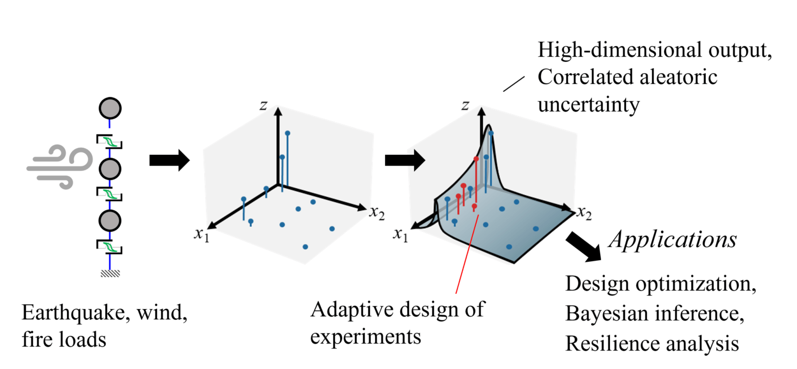
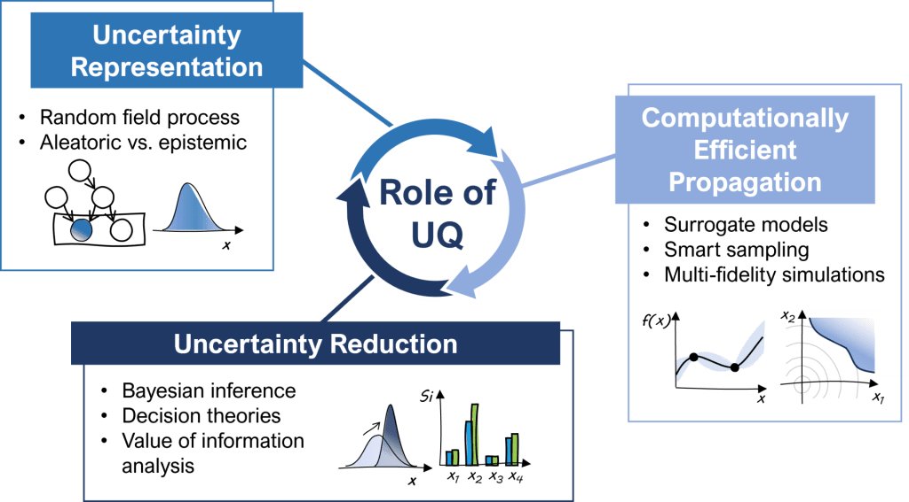
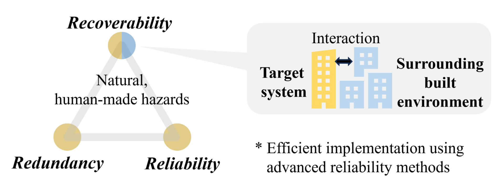
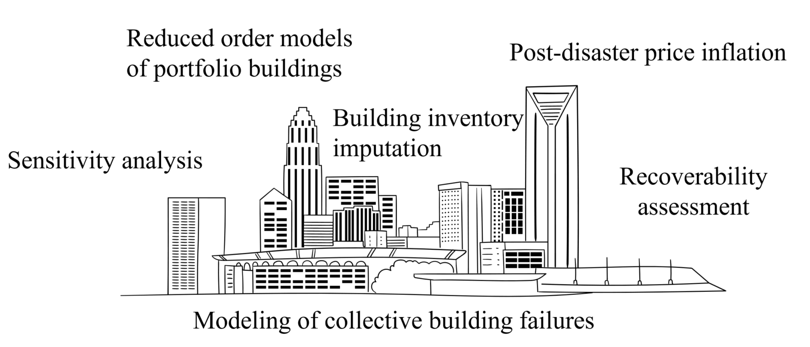
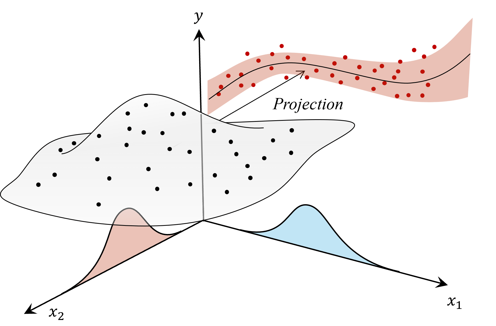
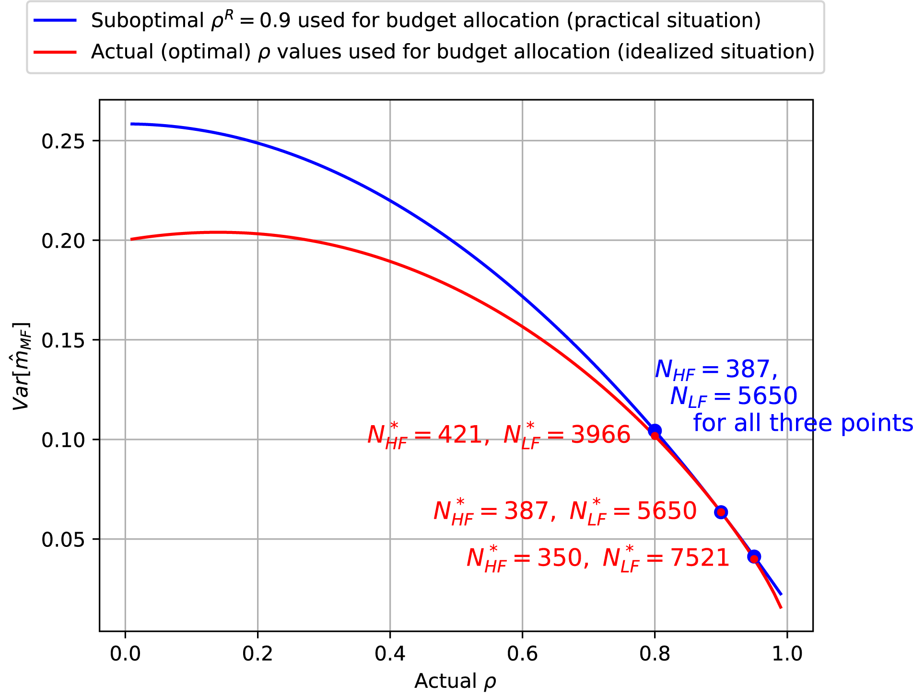
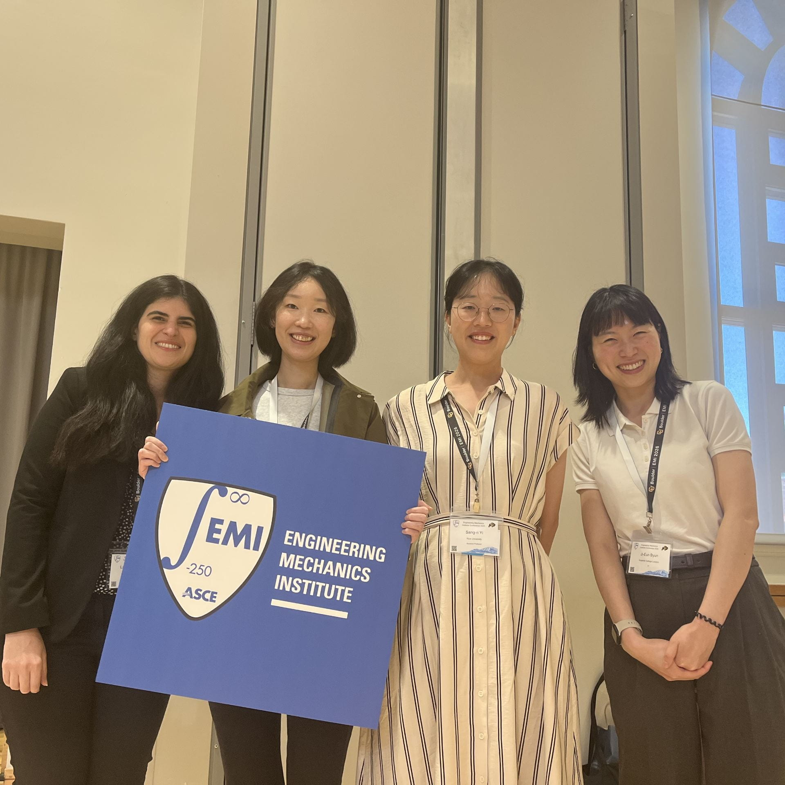
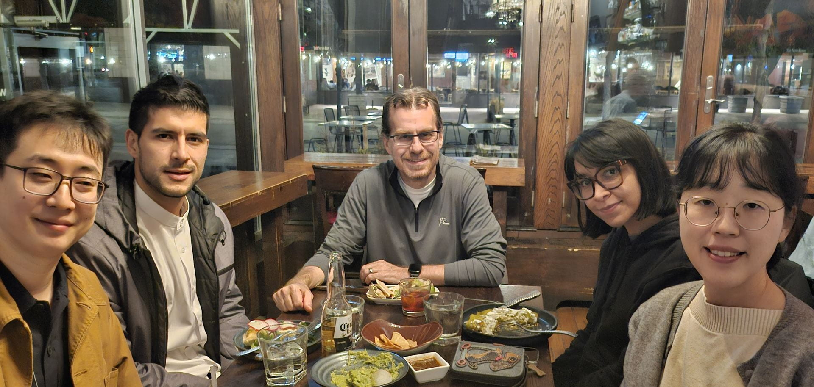

Computational UQ for resilient infrastructure
Engineering Risk, Uncertainty, and Resilience Lab
Led by Dr. Sang-ri Yi at Rice University, the lab develops scalable uncertainty quantification methods for complex, large-scale, multi-hazard simulation models.

About Sang-ri Yi
Bridging open-source simulation, uncertainty quantification, and infrastructure resilience.

Dr. Sang-ri Yi is an Assistant Professor of Civil and Environmental Engineering at Rice University. Her work connects uncertainty quantification methods with open-source simulation tools and regional resilience analysis.
Before joining Rice, she was an Assistant Project Scientist at the University of California, Berkeley and a Senior Software Developer at NHERI SimCenter.
At SimCenter, she led the design and implementation of advanced UQ capabilities in open-source natural hazard modeling and simulation applications, including workflows for regional-scale surrogate modeling, variance-based sensitivity analysis, probabilistic inventory imputation, and multi-fidelity UQ.
Education
2020-2025Postdoctoral Scholar, UC Berkeley
2020PhD, Seoul National University
2015BS, Hongik University
Research
Latest research directions.

Resilience Assessment

Regional Risk Assessment

Random Vibrations & Fields
People
A growing research group at Rice University.
The team section can expand as the lab grows, while keeping the current demo concise.
SL
Dr. Seonghyun Lim
Postdoctoral researcher focused on stochastic modeling, seismic risk analysis, and system-level resilience assessment of complex infrastructure systems.
Publications
Journals
2026
Reliable building inventory imputation for regional-scale risk assessment: an uncertainty-guided framework using spatially-enhanced Transformers.
Reliability Engineering & System Safety
2026
Dimensionality reduction can be used as a surrogate model for high-dimensional forward uncertainty quantification.
Reliability Engineering & System Safety
2026
Seismic structural response and loss estimation for dense urban districts using neural network parameterized Gaussian process.
Earthquake Engineering & Structural Dynamics
2026
A composition of simplified physics-based model with neural operator for trajectory-level seismic response predictions of structural systems.
Structural Safety
2025
Defining recoverability from system-reliability-based disaster resilience analysis perspective.
International Journal of Disaster Risk Reduction
2025
Multi-output stochastic emulation with applications to seismic response correlation estimation.
Structural Safety
Conference Presentations (Selected)
2026
Adaptation of stochastic emulation to shift of distribution.
Engineering Mechanics Institute Conference 2026 (EMI 2026)
2026
Stochastic emulation for seismic risk assessment and the impact of intensity measure selection.
Engineering Mechanics Institute Conference 2026 (EMI 2026)
2026
No-replication stochastic emulation for multi-output responses and application to seismic risk assessment.
SIAM Conference on Uncertainty Quantification (UQ26)
2025
Multi-output stochastic emulation for predicting correlated aleatoric uncertainty.
14th International Conference on Structural Safety and Reliability (ICOSSAR'25)
2025
ML/AI for advancing natural hazards engineering: The SimCenter paradigm.
IMSI UQ and Trustworthy AI Algorithms for Complex Systems and Social Good
2024
Statistical imputation of missing building inventory and its impact on regional seismic risk estimation.
18th World Conference on Earthquake Engineering (WCEE2024)
Teaching
CEVE456/556 Uncertainty Quantification
This course introduces computational methods in uncertainty quantification for civil, environmental, and other engineering fields, including global sensitivity analysis, multi-fidelity Monte Carlo, Gaussian process and polynomial chaos surrogate models, active learning, and dimensionality reduction.
View course page




News
Latest lab activity.
Seonghyun Lim, Taeha Kim, and Sang-ri Yi presented at EMI; Sang-ri also presented at ICCE and the NHERI Computational Symposium.

Sang-ri Yi presented in the Department of Civil and Environmental Engineering at the University of Notre Dame.

Seonghyun Lim presented a poster at the 2026 Conference for Quantum Topology.

Taeha Kim joined the group as a Visiting PhD Student from Seoul National University, and Sang-ri Yi joined the EMI Objective Resilience Committee.
Join the lab
Prospective PhD students are welcome to reach out.
The lab expects one or two PhD students starting Fall 2026 and is looking for students confident in engineering mathematics, statistics, and ethical research practice.
Open Positions
Fall 2026 PhD opportunities
Applicants are encouraged to introduce their background, research interests, long-term goals, and CV.
Contact Information